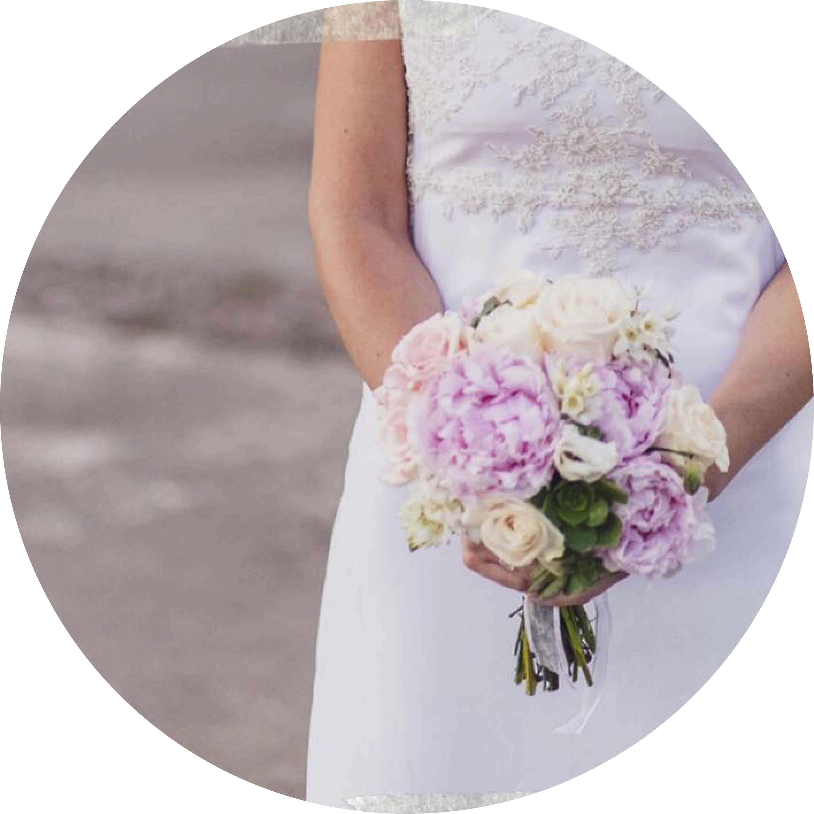

Las bodas son ceremonidas muy tradicionales y todo lo que las rodea es objeto de traciones y costumbres antiquisimas. Lo curioso de esto es que la mayoria de ellas se siguen manteniendo al pie de la letra aunque se desconozcan algunos de sus significados
Algo nuevo
Hace referencia a la vida en común que inician los novios, un nuevo camino que da comienzo en el momento del matrimonio
Algo viejo
El inicio de una vida en comun no implica apartarse de la familia o lazos afectivos anteriores, por ello se lleva algo viejo, para simbolizar de donde vienen los novios y la continuidad con esa vida anterior

Algo prestado
La idea es que ese objeto prestado venfa de alguien cercano a la novia, que ese algo la acompañe, le dé felicidad y mejor aún si lo puede conservar durante todo su matrimonio
Algo Azul
Simboliza fidelidad, amor y pureza

El ramo
Las flores representan alegría, pureza y fertilidad. Según el color y el tipo que se elija tendrá significados agregados
Velo de la novia
Hace referencia a la fidelidad, al romanticismo y a la sensualidad